設計ノート
メモ
考察
- HTTP と WebSocket は用途が違うため、処理関数も別のモノとなる。
- Plain と SSL は下位層が違うだけで用途は同じなので、処理関数を同じにしたい。
- HTTP 、 WebSocket 共に、 URL に応じて適切な処理関数を呼び出す。
HTTP 処理
- HTTP ヘッダを引数として受け取り、バイト列を返す。
WebSocket 処理
- キーボードからの入力などによって送信を行う。
- ピアから受信する。
- クラス化するのが妥当かも？
- オブジェクトの寿命は、ソケットが閉じられるまでと思われる。
リクエストURLと処理のマッチ
- GET 、 POST などのリクエスト・メソッドとリクエストURIの組に対して、処理プログラムをマッチングする。
- ヘッダを読み込み終えた時点で、WebSocketアップグレード、メソッド、URLなどが判明する。

- URLと処理のマッチングには、正規表現が使われる。
- メソッドは、GET、POSTなど。
